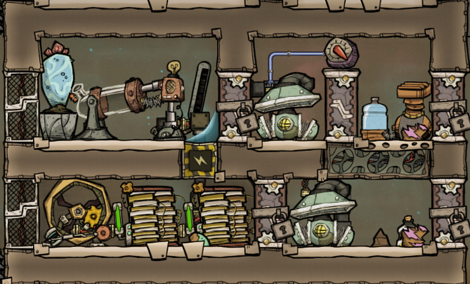
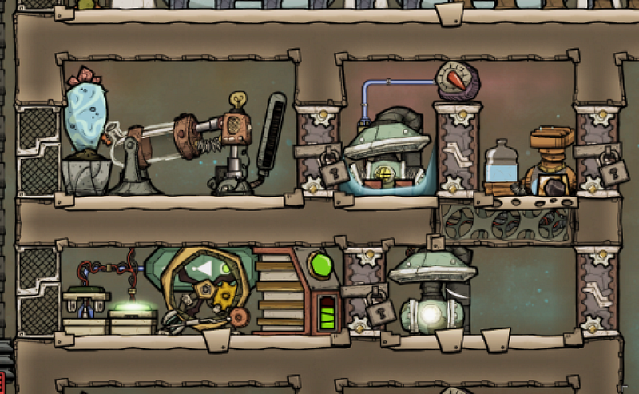
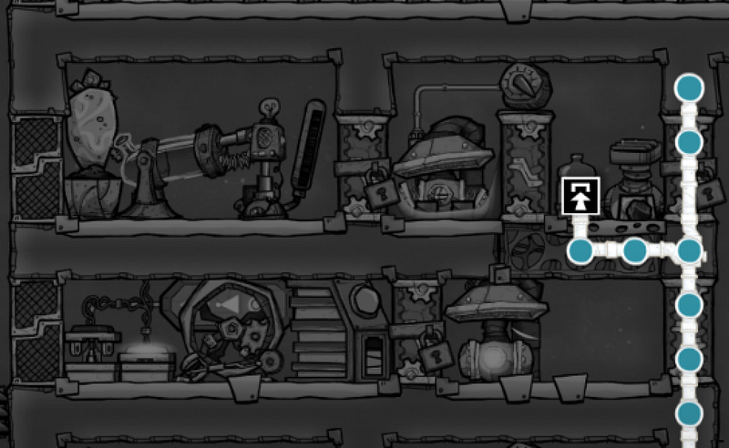
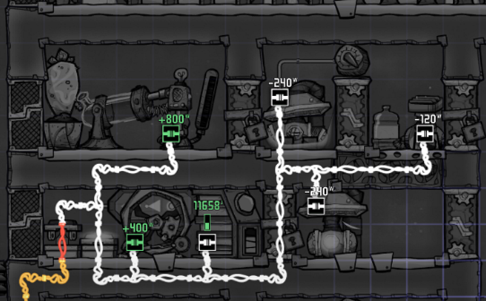
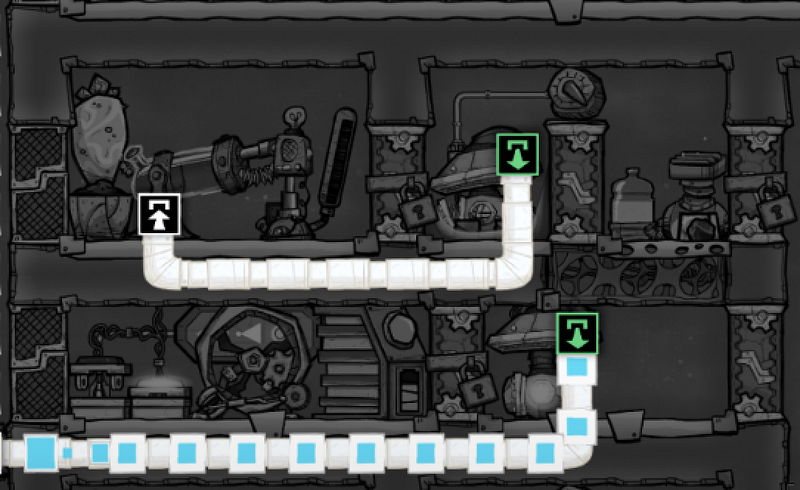
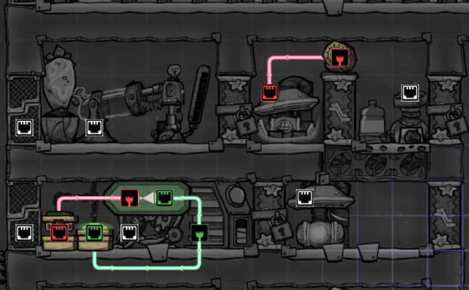
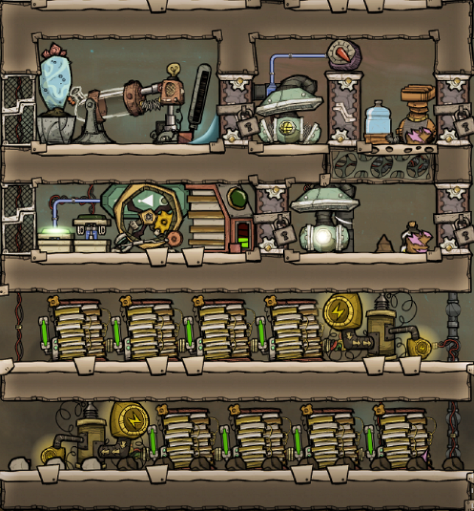
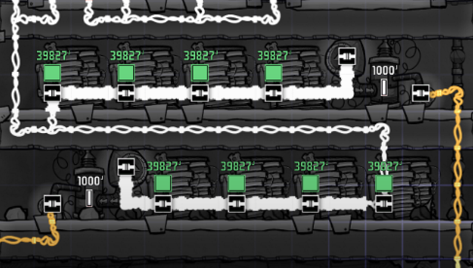

Simulaneous Oxygen and Power Generation
Simulaneous Oxygen and Power Generation
Based on videos from Brothgar and CrypticFox.
Schematics last updated on June 13, 2018.
Basic Concept
Electrolyzers produce oxygen AND hydrogen
- Hydrogen flows up. Oxygen flows down.
- Capture the hydrogen and send it to a Hydrogen Generator. 800W of energy is created.
- This is enough to run two Gas Pumps and an Electrolyzer
Initial Version
Here’s the initial version that I came up with. The Manual Generator is included to kick start the initial run. This produced a compact chamber that requires minimal maintenance, and can sustain itself energy-wise.

The point of this architecture is that it’s very minimal, and requires no ventilation hackery, such as installing a Gas Filter. The Gas Pump that is responsible for feeding the Hydrogen Generator turns on only when the Atmo Sensor goes over 750g. Hydrogen from the Electrolyzer can climb over the Manual Airlock, but the oxygen cannot.
The generated oxygen sinks to the bottom chamber, where the Gas Pump constantly pushes the oxygen out for consumption.
I had been happy with this setup for a long time.
Use The Excess Electricity
Now, the thing is, the Hydrogen Generator produces 800W, but the two Gas Pumps and the Electrolyzer only consume 600W total. Charging the battery is fine, but at some point we’re wasting energy.
So here’s the revised version. We sacrificed battery storage, installed two Power Shutoffs to regulate where the generated electricity flows.





This time the two battery are replaced by a single Smart Battery, and the power wires are connected such that the output from the Hydrogen Generator goes either into the Smart Battery, or to the outside.
This is switched using an automation schematics that allows electricity flow into the Smart Battery when it needs to charge, but switches the flow to go outside when the battery has enough charge. The Smart Battery is configured to go active at 20%, and goes goes off at 100%.
This allows us to connect the outgoing wires to a few batteries to charge. This can then be plugged into Transformers and can be put to good use.

The location of the Transformer could be better: I mean, if I only have one outlet there’s not much point. But you get the idea.
